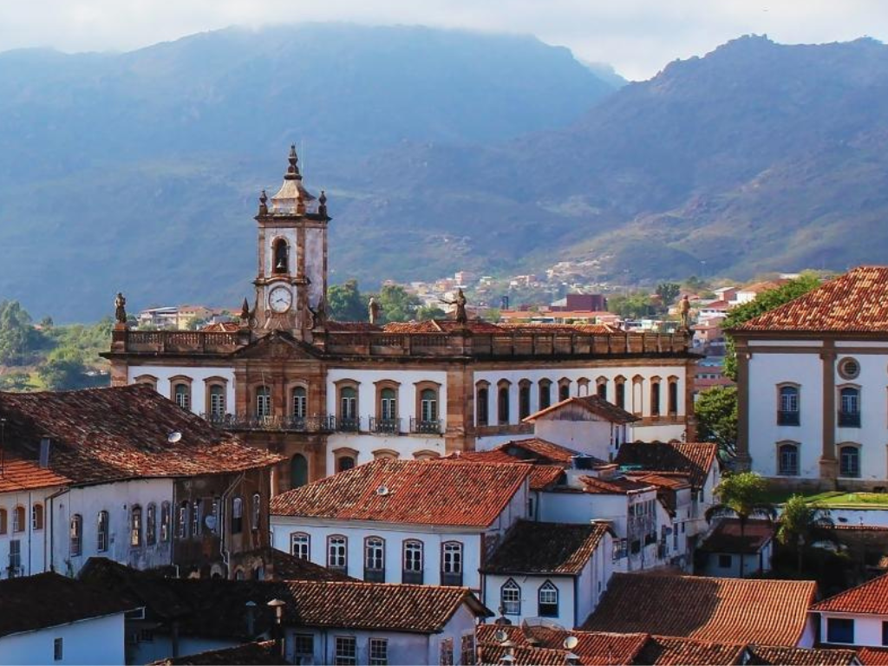

Minas Gerais, um estado chave no sudeste do Brasil, destaca-se por sua riquíssima herança histórica, culinária inigualável e povo acolhedor. Com 853 municípios — o maior número do país — e uma população superior a 20 milhões de habitantes, o território é famoso por suas cidades coloniais que guardam grande parte do patrimônio histórico brasileiro, incluindo joias barrocas de Aleijadinho. Geograficamente diverso, Minas mistura serras, biomas como Cerrado e Mata Atlântica, e abriga importantes riquezas minerais. Além disso, o estado consolidou-se como um dos principais destinos turísticos do Brasil, celebrando sua cultura, o queijo de Minas, o café e a hospitalidade única do povo mineiro.
